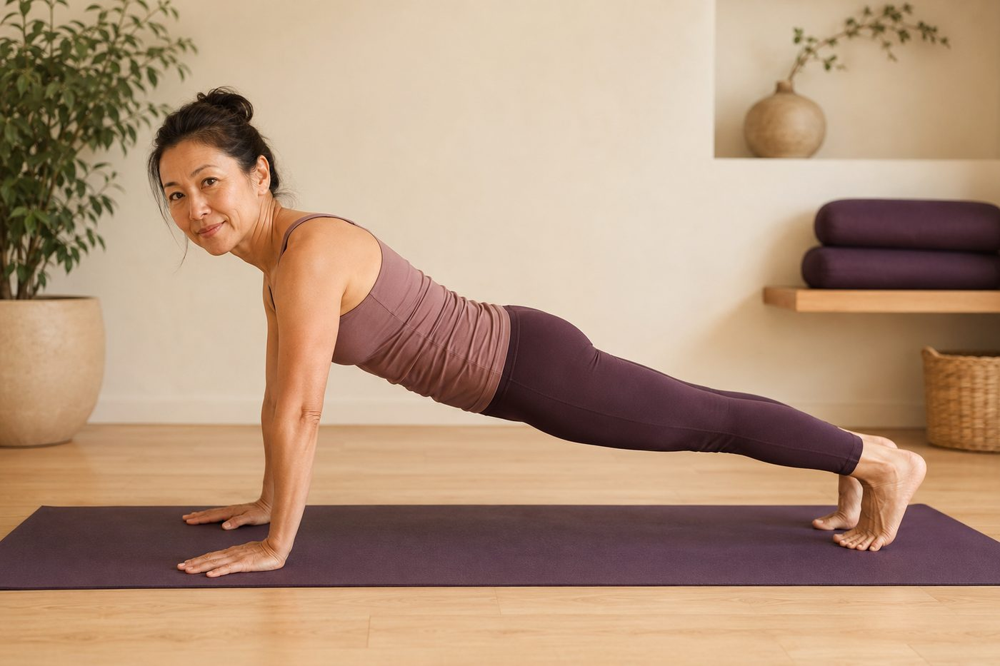

瑜伽的核心，不是仰臥起坐

很多人以為想擁有核心，就是每天躺著捲腹、追那六塊肌。可是你有沒有發現：仰臥起坐做了一大堆，腰還是痠、小腹還是凸、站久了背還是會垮？問題不一定是你不夠努力，而是你練的，可能根本不是身體真正用來穩定你的那組肌肉。
仰臥起坐練的，是「動作肌」不是「穩定肌」
仰臥起坐、捲腹主要訓練的是腹直肌，也就是大家說的六塊肌。它的工作，是把胸口往骨盆方向捲過來——負責製造動作，屬於身體表層的「動作肌」。
但仔細想想，你的生活裡真正需要的，其實很少是把身體一直捲起來。你更需要的是：站著、坐著、彎腰搬東西、抱小孩的時候，脊椎能穩穩地不亂晃、不歪掉。而這件事，六塊肌其實幫不上太多忙——它讓你「看起來」有腹肌，卻不等於你「用得出」核心。更麻煩的是，很多人拚命捲腹，只是把原本就緊的表層肌練得更緊，深層那組該出力的反而更睡著，愈練身體愈失衡。
真正的核心，是一組看不見的「內建束腹」
真正在幫你穩定的深層核心，不是單一一塊肌肉，而是一個由四面圍成、會呼吸的腔體，健身與復健界常叫它「核心罐」：
- 腹橫肌：位在最深層，像一條束腹一樣三百六十度環繞你的腰腹，一收縮就把整個腹腔輕輕箍緊。
- 多裂肌：一小束一小束貼在脊椎骨兩側，負責一節一節地把脊椎「扣」穩。
- 骨盆底肌：像腔體的底，從下方托住內臟與骨盆。
- 橫膈膜：是腔體的頂，也是呼吸的主角。
這四個一起工作，就像一個會隨呼吸鼓起、收回的罐子，從身體「裡面」把脊椎撐穩。六塊肌在最外層，這一組在最裡層——一個管好看，一個管好用。
六塊肌讓你「看起來」有核心，深層核心讓你「用起來」有核心；真正穩定脊椎的，是後者。
為什麼腰痠、體態，深層核心比六塊肌更關鍵
深層核心有一個很聰明的本事：在你動作之前，它會「預先收緊」，先幫脊椎繫好安全帶，你才開始彎腰、才抬手。這個搶先一步的機制，正是脊椎不受傷的關鍵。
如果深層核心沒力、上線太慢，這條安全帶就總是慢半拍。每次你彎腰搬東西、久坐後突然起身，壓力就直接落在腰椎和椎間盤上——這是很多人「不知道為什麼就腰痠、腰卡」的隱形原因。六塊肌再厚實，都補不了這個「時機」的洞。所以腰痠到底是核心太弱還是太緊，答案往往不是叫你去狂做仰臥起坐。
體態上也一樣：當腹橫肌與骨盆底肌長期沒張力，骨盆容易往前倒、小腹被推出來，看起來就是收不回去的凸小腹——這也是為什麼有些人明明不胖，肚子卻總是鬆鬆凸凸的。換句話說，凸小腹很多時候不是脂肪的問題，是「支撐」的問題。
瑜伽怎麼練到它？靠呼吸與穩定，不是狂捲腹
深層核心跟呼吸是綁在一起的：當你吐氣，橫膈膜上升，腹橫肌和骨盆底肌會自然跟著收。所以先學會好好的腹式呼吸，其實就是在喚醒最深層的核心——這也是為什麼瑜伽這麼重視呼吸。
另一個關鍵是，瑜伽練核心多半靠「維持」，而不是「反覆捲」：像棒式、鳥狗式、船式，用長時間的等長收縮，讓深層肌學會穩穩地工作。重點從來不是做幾下，而是找到那個「肚子微微收、腰不塌陷」的感覺，還能一邊呼吸一邊撐住。而壁繩的支撐與借力，正好幫你把表層那股硬憋的力氣放掉，讓注意力回到深層的收緊與呼吸——對核心無力、腰容易代償的人特別友善。
與其一直捲腹，不如先看清楚你的核心怎麼用
現場的 AI 體態檢測會拍下你站姿的骨盆與脊椎排列，幫你看出是深層核心沒上線、還是骨盆前傾在拖累你，讓每一次練習都有方向。
預約首次 NT$199 AI 體態檢測今天可以先記住的一件事
核心不是練給別人看的六塊，而是練給自己用的穩定。你不必急著追高難度的動作，可以從最簡單的地方開始：吐一口長氣，感覺肚子微微向內收、骨盆底輕輕上提——這就是你的深層核心正在上線。穩定是一次一次累積來的，一開始找不到感覺很正常，慢慢來、循序漸進，比用力更重要。
本頁為體態與姿勢的一般衛教與練習分享，非醫療診斷或治療。若有疼痛、舊傷或特殊病史，請先諮詢合格醫療專業人員。